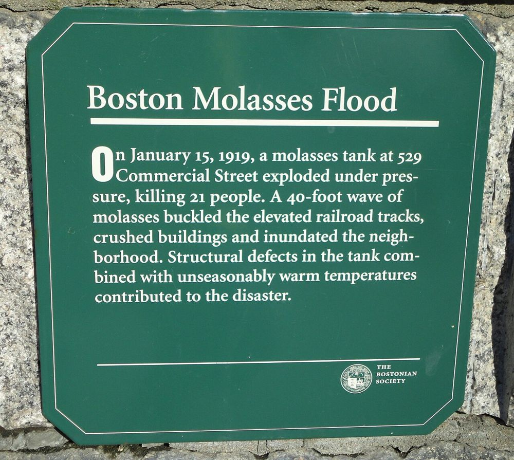

1Melas nedir, o tank neden oradaydı?
Melas, şeker kamışı ya da şeker pancarı işlenip şeker kristalleri ayrıldıktan sonra geriye kalan koyu, yapışkan bir şuruptur. Bugün daha çok yemlerde ve fırıncılıkta kullanılır. 1900'lerin başında ise önemli bir sanayi hammaddesiydi: Melas mayalandırılarak endüstriyel alkol elde ediliyordu. Bu alkol de o dönemde patlayıcı ve mühimmat üretiminde kullanılıyordu.
Boston'un kalabalık, işçi ve göçmen ağırlıklı North End semtinde, limanın hemen yanında yaklaşık 15 metre yüksekliğinde ve 27 metre çapında dev bir çelik tank vardı. Gemilerle gelen melas burada depolanıyor, sonra trenle damıtım tesisine gönderiliyordu.
215 Ocak 1919: Ne oldu?
Öğleden sonra saat 12:30 civarında, tanık anlatımlarına göre makineli tüfek sesine benzeyen bir dizi patlama sesiyle tank yarıldı. Tankın içinde yaklaşık 8,7 milyon litre, yani 12.000 ton civarında melas vardı. Bu kütle bir anda serbest kaldı.
Oluşan melas dalgası tahminen saatte 56 km hızla sokaklara yayıldı. Dalganın yer yer birkaç metre yüksekliğe ulaştığı anlatılır. Binalar temellerinden kaydı, yakındaki yükseltilmiş tren hattının çelik taşıyıcıları büküldü. İnsanlar, atlar, arabalar dalganın içine çekildi.
Melası bu kadar ölümcül yapan şey, yoğunluğu ve yapışkanlığıydı. Melas sudan yaklaşık %40 daha yoğundur. İçine düşen biri yüzeye çıkamıyor, hareket ettikçe daha çok batıyordu. Üstelik Ocak ayının soğuğunda melas giderek koyulaştı ve kurtarma ekiplerinin işi daha da zorlaştı.

3Kurtarma ve temizlik
Askerler, denizciler, polisler ve gönüllüler saatlerce melasın içinde yaralıları aradı. Bazı cesetler ancak günler sonra bulunabildi. Toplamda 21 kişi öldü, yaklaşık 150 kişi yaralandı. Ölenler arasında çocuklar da vardı.
Temizlik haftalar sürdü. Melas tuzlu deniz suyuyla yıkanarak temizlenmeye çalışıldı. Limandaki su aylarca kahverengi kaldı. Bölge sakinleri on yıllar boyunca, sıcak yaz günlerinde sokaklardan hâlâ melas kokusu yükseldiğini anlattı.
4Kim suçluydu?
Tankın sahibi şirket önce kazayı bir sabotaja bağlamaya çalıştı. Ancak yıllarca süren dava, tankın aceleyle inşa edildiğini, yeterince test edilmediğini ve sızıntılara rağmen önlem alınmadığını ortaya koydu. Bölge sakinleri, tankın sızdırdığını ve kahverengi şeritler oluştuğunu daha önce fark etmişti.
Şirket sonunda tazminat ödemek zorunda kaldı. Felaket, ABD'de büyük yapıların bir mühendis tarafından hesaplanıp onaylanması gerektiği yönündeki kuralların sıkılaşmasına katkıda bulundu. Yani bu tuhaf felaketin mühendislik tarihinde de önemli bir yeri var.
💡 Biliyor muydun?
- Melasın soğukta koyulaşması, hem dalganın yavaşlamasını hem de kurtarılmayı güçleştirdi.
- 2016'da bilim insanları olayı modelleyerek soğuk havanın melası daha da ölümcül yaptığını gösterdi.
- Felaket yerinde bugün bir park ve oyun alanları var. Küçük bir anma tabelası olayı hatırlatıyor.
✅ Kaynaklar
📷 Görseller
- Kapak: BPL · Public domain · Wikimedia Commons
- Boston'da felaket yerinin yakınındaki anma tabelası: MLHalsey · CC BY-SA 3.0 · Wikimedia Commons